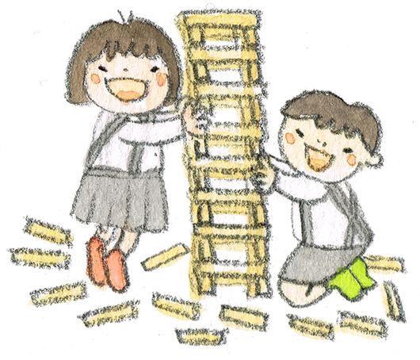
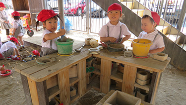
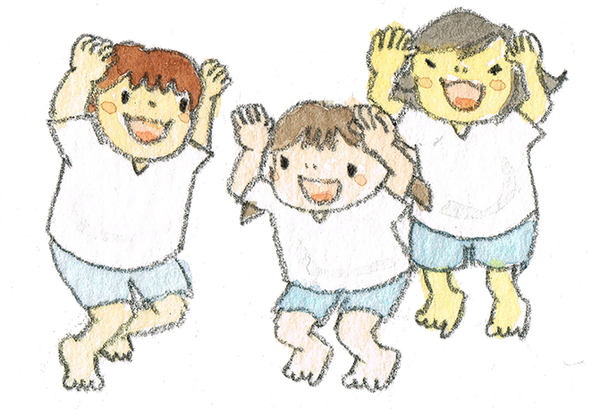
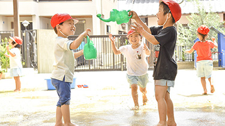
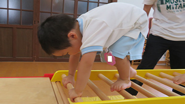
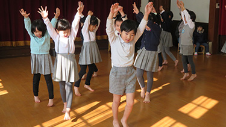
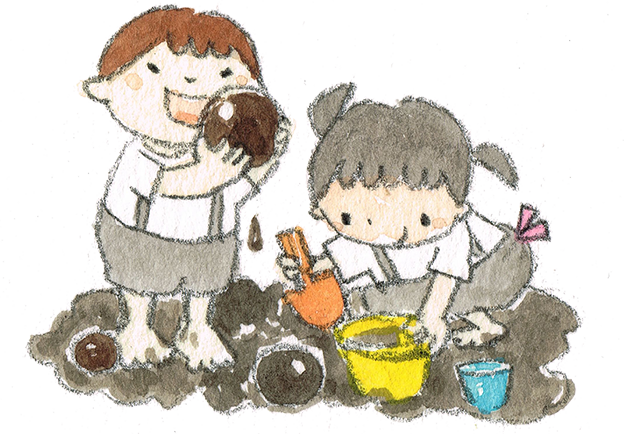
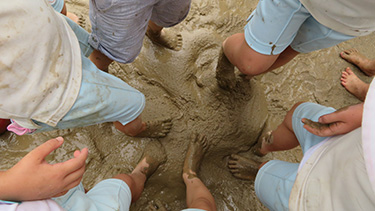
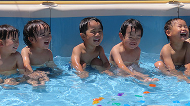

遊びの中でのいろいろな経験を通して心と身体を養っていきます。
自由遊びの時間をたっぷりとり、遊び場所も自分たちが決め、主体的に活動できるように保育者が環境を整えます。「遊び」に集中する力は、子ども達のやる気を起こし自分で創意工夫し、それまでできなかったこともやろうとする自信につながります。




足の裏は「第二の心臓」とたとえられることもあります。裸足保育とはできるだけ裸足で活動する機会を増やすことです。裸足での活動を増やすことにより、「土踏まず」の形成が発達します。
「土踏まず」をきっちり形成することにより、最小限のエネルギーで活動できるようになり、疲れにくい足になります。
身体の歪みを整え、体幹が鍛えられ、子どもの運動能力を大きく向上させることができます。足の裏にはたくさんのつぼがあります。足の裏を刺激することにより、足から脳への刺激も大きく、乳幼児期にしか育たない脳部位を豊かに育みます。
さらに、裸足でするリズム遊びを通して、体幹を意識し、正しい姿勢へ導きます。心身共に丈夫に成長できる様に、室内でも、園庭でもたくさん裸足で遊びます。
園舎の中では、乳児（こひつじクラス）は一年中裸足、幼児（ももプチ含む）は、４月～９月まで裸足で過ごします。１０月からは、上靴を使用いたします。季節の良い時には、園庭でも裸足で遊びます。


子ども達は雨上がりの園庭の水たまりに大喜びです。水たまりに裸足で入ってみたり、手で泥をこねるといった感覚遊びは、情緒の安定や思いの解放を保障するとても大切な活動です。保護者の方には、汚れた服のお洗濯を「今日もいっぱいあそんだね」と褒めていただき、笑顔で受け止めていただけるようにお願いしています。

夏の遊びではプールやシャワー・色水遊びなど、水に触れる感覚遊びをたくさんします。感覚遊びを通し、開放感と満足感を味わいます。
さらに、水に対する抵抗感もなくしていきます。プールでは、水の外と中で身体の動き方の違いを体感することで、体の感覚を鍛えます。